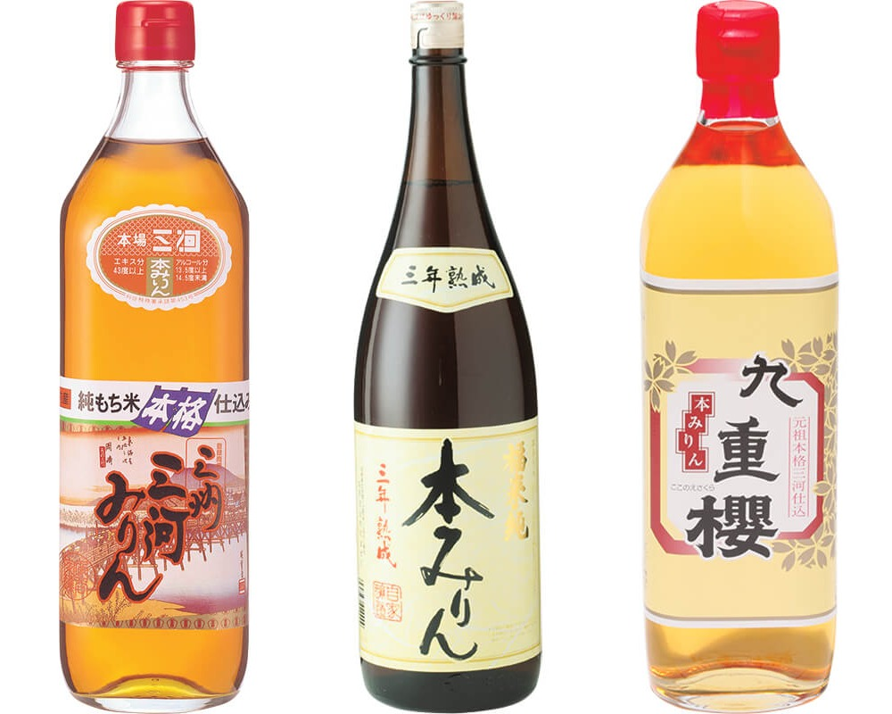
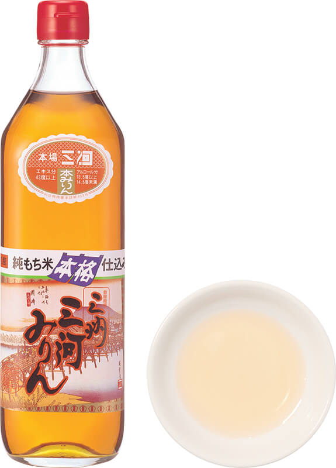
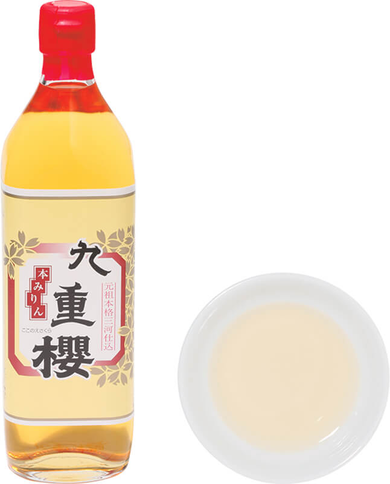

Префектура Айти · Хэкинан · еда
Мирин Микавы: сладкое рисовое вино, которое хочется пить, а не только добавлять в соус

Когда тушёному блюду японской кухни не хватает глубины, повар тянется за мирином. Два мирина, которые знаток брожения советует держать дома всегда, делают в префектуре Айти, и один из них так хорош, что его пьют со льдом.
Что это
Сладкое рисовое вино для кухни
Мирин это сладкая рисовая приправа, которую в Японии держат под рукой так же, как соевый соус. Хон-мирин, «настоящий мирин», бродит из клейкого риса, рисового кодзи и крепкого дистиллята сётю, и в нём есть алкоголь. Именно он придаёт тушёным блюдам и соусам глубину вкуса.
Хираку Огура называет себя «дизайнером брожения»: он живёт в префектуре Яманаси, вместе с пивоварами и винокурами со всей Японии придумывает новые продукты, ведёт мастер-классы и написал книгу-путешествие по ферментированной Японии. В 2019 году он выбрал три мирина, которые стоит держать дома всегда. Два из них делают в Хэкинане, небольшом городе на берегу залива Микава в префектуре Айти.
Классика
«Сумия Бундзиро сётэн»: литр риса на литр мирина
Мирин «Сансю Микава мирин» узнают по этикетке: она почти не меняется больше 50 лет. Компания «Сумия Бундзиро сётэн» основана в 1910 году и с тех пор держится простого правила: на одну меру мирина уходит одна мера риса. Поэтому в бутылке остаётся вся природная сладость и вкус риса.

«Когда я впервые попробовал этот мирин, я был поражён: оказывается, мирин может быть настолько вкусным. Я пью его со льдом, пока готовлю. У него настоящая мириновая сладость и плотный, тяжёлый вкус»
Хираку Огура
В 2019 году бутылка 700 мл стоила 1122 иены. Мирин можно заказать по телефону или через интернет, его продают и крупные японские интернет-магазины. Посмотреть, как его ставят на брожение, на заводе можно только группой и только по предварительной записи.
«Сумия Бундзиро сётэн»
- Адрес
- префектура Айти, Хэкинан
- Телефон
- +81 566-41-0748
- Цены / Вход
- «Сансю Микава мирин», 1122 иены за 700 мл
Винокурня
Kokonoe Mirin: мирин из большого старого склада
Kokonoe Mirin делает свой «Коконоэ сакура» из простых, но отборных продуктов: крупного клейкого риса, рисового кодзи по рецепту, который мастера передают из поколения в поколение, и тщательно перегнанного сётю. Густой аромат, свойственный только продуктам брожения, ему дарят микроорганизмы большого старого склада, который винокурня бережёт со времён основателя. Работает она с 1772 года.

«Вкус легче, чем я ожидал. Это мирин на каждый день, и с ним легко справится даже тот, кто покупает мирин впервые»
Хираку Огура
В 2019 году бутылка 500 мл стоила 999 иен. Его тоже можно заказать по телефону или через интернет, а можно приехать в Хэкинан. При винокурне работает фирменный магазин «Исикава Хатиродзи сётэн», а в бывшем доме семьи владельцев открыт ресторан и кафе с блюдами на мирине. По записи здесь проводят экскурсию: показывают небольшой музей со старыми документами и инструментами, часть склада и место, где отжимают мирин. Сами производственные линии не показывают, о них рассказывают стенды и короткий фильм.
Kokonoe Mirin
- Адрес
- префектура Айти, Хэкинан, Хамадэра-мати, 2-11
- Телефон
- +81 566-41-0708 (экскурсия), +81 566-45-7998 (магазин)
- Часы работы
- магазин 9:30–17:30, экскурсия 10:00–10:40 (по записи)
- Выходные
- магазин в понедельник и вторник; экскурсии нет в понедельник, вторник, субботу, воскресенье и праздники
- Цены / Вход
- «Коконоэ сакура», 999 иен за 500 мл; экскурсия бесплатно
- Как добраться
- 5 минут пешком от станции Хэкинан линии Мэйтэцу Микава
- Сайт
- kokonoe.co.jp